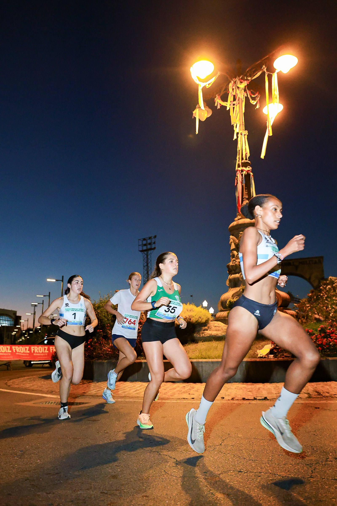
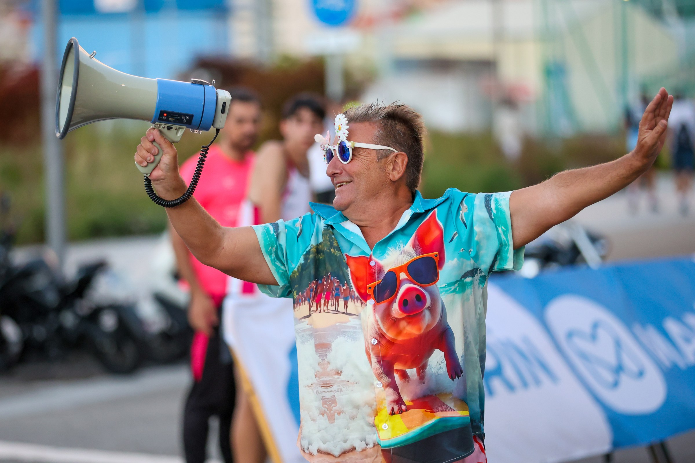

Marín filled Avenida de Ourense with runners on 3 October for the 27th Milla Urbana San Miguel, bringing together youth categories, popular competitors and elite milers beside the Alameda Rosalía de Castro.
The programme opened with the youngest categories at 18:00, followed by the popular 5 km at 19:40, the popular mile from 20:20 and the elite women's and men's miles from 20:30.

From first races to elite speed
The one-mile distance placed the action in a compact urban circuit where spectators could follow every surge. The 5 km race widened the programme, while age-group contests gave younger athletes their own place on the course.
The Concello de Marín and Club San Miguel de Marín organised the event, with the circuit running along Avenida de Ourense near the Alameda Rosalía de Castro.

Image Media coverage
Luan Chepernate, Sergio Mendes, Luciano Inocencio and Felipe Albano covered the XXVII Milla de San Miguel de Marín for Image Media, documenting the starts, the racing and the atmosphere around the urban circuit.
Their coverage follows the event from the first daylight races into the night programme, preserving both the competitive intensity and the character of the gathering.
Image Media coverage
Reporting: IM News Editorial Desk
Coverage photographers: Luan Chepernate, Sergio Mendes, Luciano Inocencio and Felipe Albano / Image Media
Event date, programme, venue and organisers checked against the event registration and published programme.